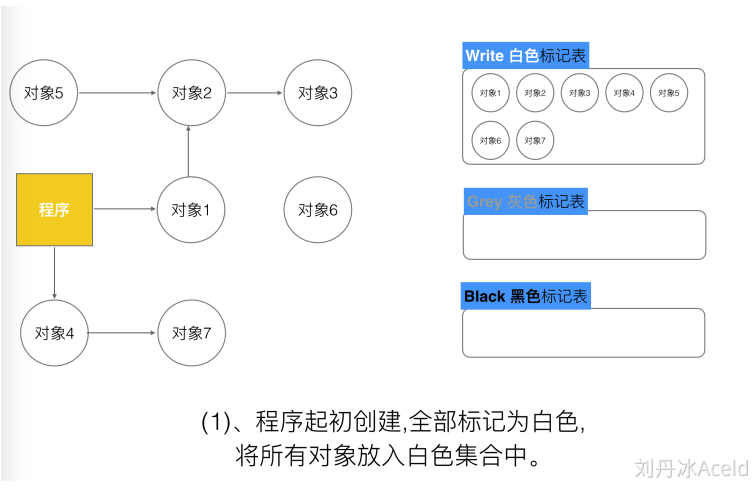
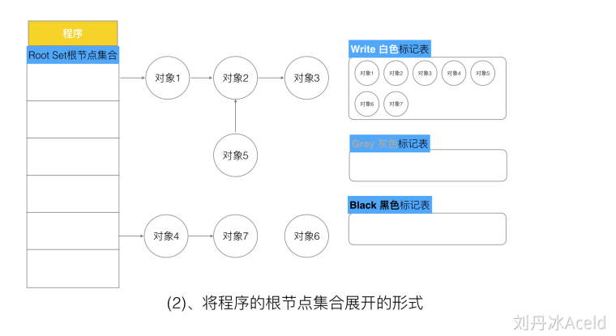
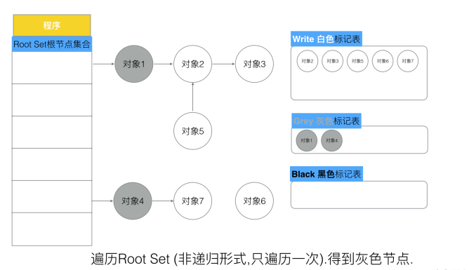
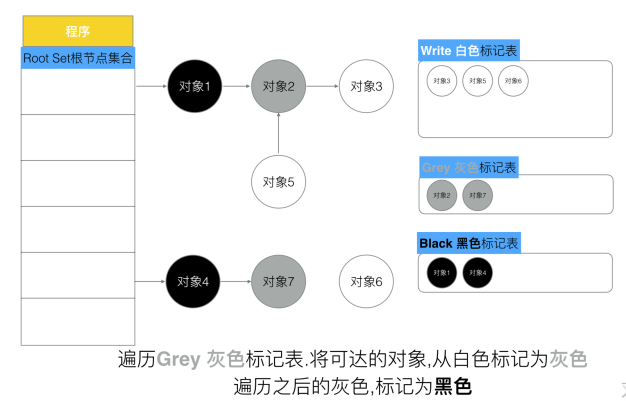
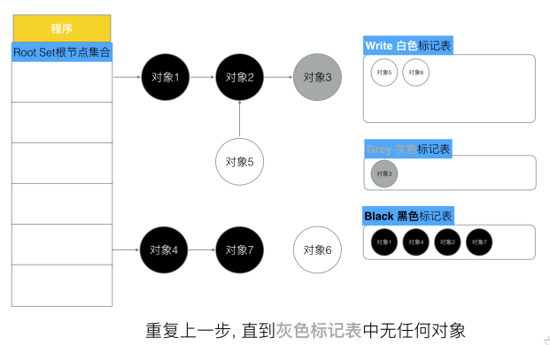
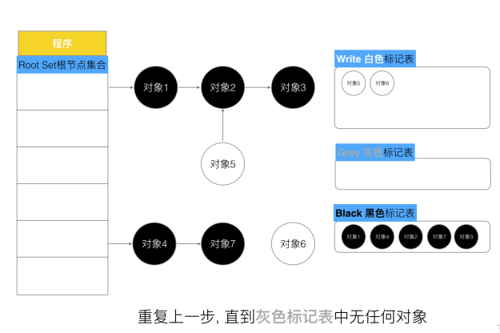
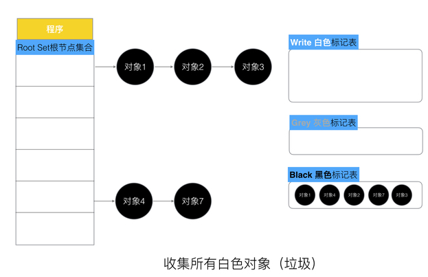
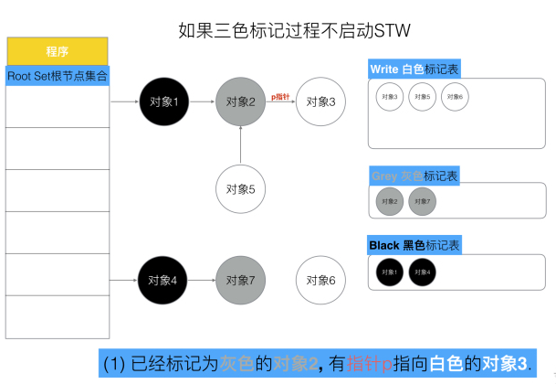
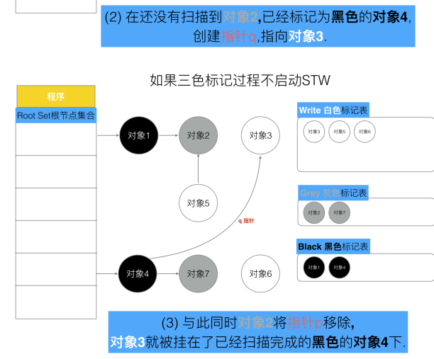

三色标记法
GC过程和其他用户goroutine可并发运行，但需要一定时间的STW(stop the world)。
具体过程
第一步 , 每次新创建的对象，默认的颜色都是标记为“白色”；
 第二步, 每次GC回收开始, 会从根节点开始遍历所有对象，把遍历到的对象从白色集合放入“灰色”集合。
这里 要注意的是，本次遍历是一次遍历，非递归形式，是从程序抽次可抵达的对象遍历一层， 如下图所示，当前可抵达的对象是对象1和对象4，那么自然本轮遍历结束，对象1和对象4就会被标记为灰色，灰色标记表就会多出这两个对象。
第三步, 遍历灰色集合，将灰色对象引用的对象从白色集合放入灰色集合，之后将此灰色对象放入黑色集合。
这一次遍历是只扫描灰色对象，将灰色对象的第一层遍历可抵达的对象由白色变为灰色， 如：对象2、对象7. 而之前的灰色对象1和对象4则会被标记为黑色，同时由灰色标记表移动到黑色标记表中。
第四步, 重复第三步, 直到灰色中无任何对象，如图所示。
 第五步: 回收所有的白色标记表的对象，也就是回收垃圾。
没有STW的三色标记法
 对象4已经不会再扫描了，所以对象3不会再标记，而是等待被回收清除
本来是对象4合法引用的对象3，却被GC给“误杀”回收掉了。